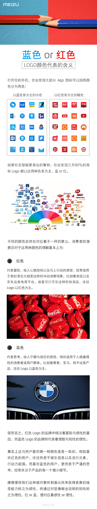

本文系转载或参考，原文链接》
天天刷手机的你是否发现，大部分APP图标可以按照颜色分为蓝色系和红色系两类，而生活中80%的商标Logo也都是以这两种色系为主，蓝或者红。这到底是为什么呢？
究竟手机应用的图标该选什么颜色才更有吸引力呢？蓝色是受到最普遍喜爱的颜色，这就是为什么许多公司用蓝色作为商标颜色或者移动应用程序的图标颜色。但是，这并不意味着大多数公司都应该选择蓝色，因为这样难以在竞争对手中脱颖而出。APP图标颜色在选择上其实涉及到消费者心理方面的知识，魅族科技今日在官微解释称，消费者的潜意识对于这两种颜色色的理解基本上为：
- 红色代表冒险，给人心跳加快以及马上行动的感觉，经常适用于类似清仓大拍卖这样的冲动消费场景。比如像淘宝以及京东这类电商平台，或者可口可乐这样的快消品，往往Logo以红色为主。
- 蓝色代表思考，给人宁静信任的感觉，倾向适用于人格偏理性的消费者或用户群体。比如像惠普、宝马、知乎这类产品，往往Logo以蓝色为主。
简而言之，红色Logo的品牌中倾注着冒险与感性的基因，而蓝色Logo的品牌则代表着理智与知性的理性。
